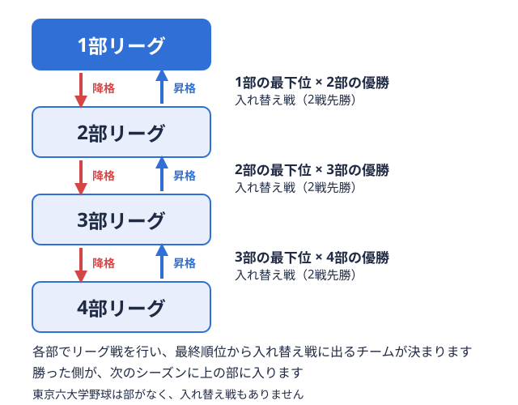

就活ガイド 2026-11-05
野球部員の就活、自己分析のやり方｜モチベーショングラフとWill-Can-Mustで野球部経験を言語化する方法
就活の準備で最初にやるべきと言われる「自己分析」ですが、大学野球部員の場合は練習・試合・遠征に時間を取られ、気づけば後回しになっているケースが多く見られます。さらに「自己分析って結局何をすればいいのかわからない」という声も少なくありません。この記事では、東京六大学野球連盟・東都大学野球連盟でプレーする部員・マネージャー選手ではなく、練習や試合の運営、用具や書類の管理などで部を支える部員。仕事の範囲は大学ごとに違う。 用語辞典で見る・主務マネージャーの代表にあたる部員。連盟や大学との連絡窓口になり、リーグ戦の運営や合宿の準備なども受け持つ。用語辞典で見るを想定し、モチベーショングラフとWill・Can・Mustという2つの手法を使った自己分析の進め方と、そこで見つけた強みをES・面接にどうつなげるかを整理します。
用語辞典で見る・主務マネージャーの代表にあたる部員。連盟や大学との連絡窓口になり、リーグ戦の運営や合宿の準備なども受け持つ。用語辞典で見るを想定し、モチベーショングラフとWill・Can・Mustという2つの手法を使った自己分析の進め方と、そこで見つけた強みをES・面接にどうつなげるかを整理します。
なぜ野球部員は自己分析が後回しになりやすいのか
一般的な就活スケジュールでは、大学3年の夏から秋にかけて自己分析や業界研究を進める学生が多いとされています。ところが野球部員の場合、この時期は秋季リーグ戦のまさに真っただ中です。東都大学野球連盟のように入れ替え戦上の部で最下位になったチームと、すぐ下の部で優勝したチームが戦う試合。勝った側が次のシーズンに上の部へ入る。 
自己分析で明らかにしたい2つのこと
自己分析とは、単に「自分の性格」を言葉にする作業ではありません。就活で使う自己分析には、大きく2つの目的があります。
- 自分が力を発揮しやすい環境・場面を知ること：どんな状況でモチベーションが上がり、どんな状況で下がるのかを把握する
- 自分の経験を仕事で再現できる力に翻訳すること：野球部での行動や工夫を、採用担当者に伝わる言葉に言い換える
この2つを順番に進めるうえで定番とされているのが、「モチベーショングラフ」で振り返りを行い、「Will・Can・Must」で方向性を整理するという流れです。
STEP1：モチベーショングラフで野球人生を振り返る
モチベーショングラフとは、横軸に時間、縦軸にやる気の高さをとり、これまでの出来事をグラフとして描いていく手法です。山（モチベーションが高かった時期）と谷（低かった時期）それぞれについて、「その時どんな環境にいたか」「誰と、何をしていたか」を深掘りすることで、自分が力を発揮しやすい条件が見えてきます。
野球部員であれば、次のような時期を区切りとして振り返るとグラフを描きやすくなります。
- 入部直後〜新人戦：右も左もわからない中でどう過ごしていたか
- レギュラー争い・ポジション争い：競争の中でモチベーションがどう変化したか
- 入れ替え戦・昇降格がかかったシーズン：プレッシャーの中でどう振る舞ったか
- ケガ・出場機会の減少：思うようにいかない時期をどう乗り越えたか
- 引退前のラストシーズン：チームとしてどう締めくくろうとしたか
入れ替え戦の仕組みを振り返りたい場合は大学野球の入れ替え戦とは｜東都1部〜4部の仕組みと直近3シーズンの結果、実際の順位の推移はベースボールマニアの東京六大学野球 順位表や東都大学野球1部 順位表から確認できます。自分のチームがどのシーズンにどんな立場で戦っていたかを合わせて見ておくと、出来事の背景説明がしやすくなります。
山・谷の「理由」を深掘りする
グラフを描くこと自体が目的ではなく、重要なのは山と谷それぞれの「理由」を深掘りすることです。例えば「レギュラーになれず出場機会が減った時期」が谷だったとして、そこで何も行動しなかったのか、それとも練習メニューを見直したり、違う形でチームに貢献しようとしたのかによって、語れるエピソードは大きく変わります。各時期について、以下の3点をメモに残しておきましょう。
- そのときの状況・課題は何だったか
- 自分がどう考え、どう行動したか
- 結果として何が変わったか、何を学んだか
STEP2：立場別にエピソードを棚卸しする
野球部内での立場によって、棚卸しで見えてくる強みの傾向は異なります。モチベーショングラフで見つけた山・谷のエピソードを、以下の観点で整理すると言語化が進みやすくなります。
| 立場 | 棚卸しで見つかりやすい強み | 深掘りの視点 |
|---|---|---|
| レギュラー選手 | 目標達成に向けた継続力・数値への向き合い方 | 結果だけでなく、結果に至る過程でどんな工夫をしたか |
| 控え選手 | 逆境下での自己管理力 | 出場機会が少ない中で、何を目的に練習を続けたか |
| マネージャー・学生コーチ選手としてではなく、練習メニューの立案、ノック、投球の指導などで選手を支える学生スタッフ。呼び方は大学で違う。用語辞典で見る | 組織運営力・調整力 | 立場の異なる人たちをどうまとめ、どんな課題を解決したか |
| 主務・会計 | 数字管理力・折衝力 | 部費や遠征費など、限られた資源をどう管理・交渉したか |
結果の大きさよりも、課題に対してどう考え、どう行動したかというプロセスが評価されやすい点は、どの立場でも共通しています。
STEP3：Will・Can・Mustで方向性を整理する
モチベーショングラフと棚卸しで「過去」を整理したら、次は「これから」の方向性を考えるステップです。ここで使われるのが、Will（やりたいこと）・Can（できること）・Must（企業から求められること）という3つの軸で整理するWill・Can・Mustというフレームワークです。
- Can（できること）から書き出す：棚卸しで見つかった強み・得意なことをまずリストアップする
- Will（やりたいこと）を挙げる：野球部の経験を振り返る中で、やりがいを感じた場面・環境から方向性を探る
- Must（求められること）は企業研究で埋める：気になる企業の業務内容や求める人物像を調べ、Can・Willとの重なりを確認する
Will・Can・Mustの3つが一致する仕事が、いわゆる「向いている仕事」とされています。重ならない場合は、無理に3つを一致させようとせず、Canを軸にWillの方向性を探る、という進め方が現実的です。向いている業界・企業の具体的な探し方は、野球部員の就活、向いている業界・企業は？体育会系採用とOB・OG訪問の進め方で詳しく解説しています。
自己分析をES・面接にどうつなげるか
自己分析で整理した内容は、そのままES・面接の材料になります。モチベーショングラフの山・谷のエピソードは「課題→行動→学び→再現性」という型に当てはめることでガクチカ・自己PRに、Will・Can・Mustで整理した方向性は志望動機の土台になります。ES作成の具体的な型や文字数の目安は野球部員の就活エントリーシート(ES)の書き方｜ガクチカ・自己PR・志望動機を書くコツとNG例、面接で聞かれやすい質問と答え方は野球部員の就活面接対策｜体育会系ならではの想定質問と受かる答え方のコツを参考にしてください。自己PR全体の組み立て方を一通り確認したい場合は、東京六大学・東都大学野球部員の就活術｜体育会経験を強みに変える自己PR完全ガイドもあわせて参考にしてください。
いつまでに自己分析を終えておくべきか
秋季リーグ戦中に本格的な自己分析を進めるのは難しいため、リーグ戦のない期間にまとめて取り組むのが現実的です。学年別のスケジュール全体の立て方や、リーグ戦と就活準備を両立させる考え方は、野球部員の就活はいつから？学年別スケジュールと秋季リーグ・引退時期の両立ガイドで詳しく整理しているので、こちらも参考にしてください。シーズン中はモチベーショングラフの出来事をメモに残しておくだけでも、オフシーズンにまとめて深掘りする際の負担を減らせます。
よくある質問
- Q. 自己分析に正解はありますか？ ありません。重要なのは、山・谷それぞれの「理由」を自分の言葉で説明できるようになることです。
- Q. レギュラーになれなかった経験しか振り返るものがありません。問題ありますか？ 問題ありません。見られているのは結果の大小ではなく、課題に対する考え方・行動のプロセスです。
- Q. 一人で進めるのが難しい場合はどうすればいいですか？ 第三者に話を聞いてもらいながら深掘りすると気づきが増えやすくなります。体育会の就活はツナカレへご相談ください。
まとめ
野球部員の自己分析は、「モチベーショングラフで過去を振り返る」「立場別にエピソードを棚卸しする」「Will・Can・Mustで方向性を整理する」という3ステップで進めると、限られた時間でも要点を押さえやすくなります。整理した内容はES・面接の材料にそのまま使えるので、秋季リーグ戦のオフシーズンを使って早めに取り組んでおきましょう。自分のチームの今シーズンの戦いぶりはベースボールマニアの東京六大学野球 日程や東都大学野球1部 日程からも確認できます。
出典
野球部のガクチカ、テンプレ＆例文集を受け取る
書き方テンプレ＆例文集（無料PDF）をプレゼント。
オフシーズン・引退後に、長期インターンという選択
部活で培った力を実務で試す。16タイプ診断（30秒）で合う企業がわかります。